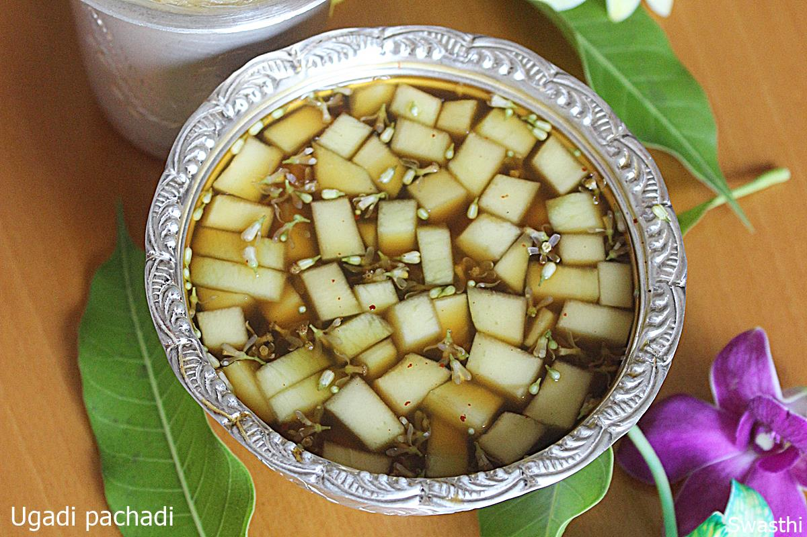

Ugadi Pachadi

Description
Ugadi pachadi is a mixture of various ingredients that has 6 different tastes. It signifies that life is a mixture of happiness, sadness, anger, disgust, fear and surprise.
Ingredients
- 1 ½ cup water
- 2 tbsp mango raw, peeled and chopped, pieces
- 3 sprigs neem Few with flowers or 1 tbsp. flowers
- 1 pinch salt or as needed
- 3 tbsp Jaggery as needed
- 1 pinch pepper powder
- Tamarind as needed or 1 tsp tamarind pulp
Steps
- Wash tamarind and soak it in ½ cup warm water till it softens.
- Traditionally only fresh neem flowers are used to make ugadi pachadi. But if you live in a place where you don't get fresh flowers then use the dried ones.
- While the tamarind soaks, pluck the flowers from neem sprigs. Or alternate quick method: add the neem sprigs to a thin cloth, bring the edges of the cloth together so that they don’t fall off from the cloth.
- Hold the edges tightly and hit the cloth on to the kitchen counter several times. Neem flower or petals get separated from the sprigs and fall of in the cloth, collect them and set aside.
- Add grated jaggery to another one cup water, stir till it melts off. Filter it through a coffee strainer to another bowl, filter the tamarind pulp or water as well to the same bowl.
- Next add rest of the ingredients. Mix well.